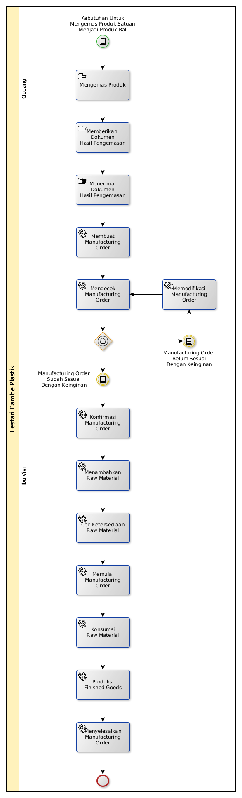

Pencatatan Hasil Pengemasan
A. START
Ada kebutuhan untuk mengemas produk satuan menjadi produk bal
B. LANGKAH KERJA

B.1. Membuat Manufacturing Order
B.1.1. Instruksi Kerja Utama
- Langkah ke-8, 10, 11, 12, 13, 14, 15, 16, 17 tidak perlu dilakukan
- Langkah ke-3 diisi dengan nama Packaging.
- Langkah ke-4 diisi dengan produk yang diproduksi. Pilihlah produk bal nya.
- Langkah ke-5 diisi dengan Unit.
- Langkaah ke-7 diisi dengan tanggal pengemasan selesai dilakukan.
B.2. Mengkonfirmasi Manufacturing Order
B.2.1. Instruksi Kerja Utama
B.3. Memulai Manufacturing Order
B.3.1. Instruksi Kerja Utama
B.4. Menambahkan Raw Material
B.4.1. Instruksi Kerja Utama
- Langkah ke-6 diisi dengan produk satuan yang dikemas.
- Langkah ke-7 diisi dengan jumlah produk satuan yang digunakan.
B.5. Konsumsi Raw Material
B.5.1. Instruksi Kerja Utama
- Langkah ke-6 disii dengan tanggal pengemasan selesai dilakukan.